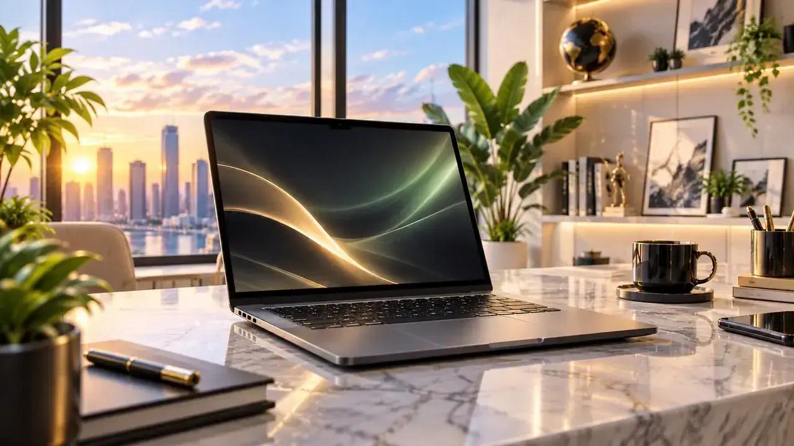
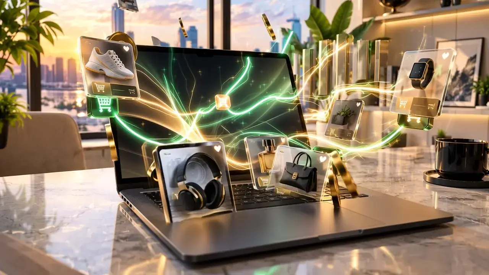

01 · NICHE
Vind vraag
Kies onderwerpen waar mensen actief naar oplossingen en producten zoeken.

Bouw content die gevonden wordt, vertrouwen creëert en bezoekers omzet in meetbare affiliate commissies.
De cinematic intro stopt niet ineens. De interface wordt de volgende sectie: van niche naar content, van click naar conversie en van data naar groei.
Kies onderwerpen waar mensen actief naar oplossingen en producten zoeken.
Maak behulpzame vergelijkingen, tutorials en koopgidsen die echt iets oplossen.
Plaats relevante affiliate links op het moment dat de bezoeker klaar is voor actie.
Meet clicks, conversies en opbrengst en schaal de pagina's die resultaat leveren.
De 3D-avatar neemt de scène over en reageert op je scroll.
De 3D-weergave is op dit apparaat niet beschikbaar. Ontdek hieronder wat je AI Partner voor je doet.

Cards, typografie, cijfers en diepte reageren op scroll. Daardoor voelt de hele site als één ervaring, terwijl alleen de sterke momenten video gebruiken.
Maak pagina's die maanden na publicatie nog relevante bezoekers aantrekken.
Gebruik korte content als ingang naar diepere reviews en vergelijkingen.
Bouw een lijst zodat je niet afhankelijk bent van één algoritme of platform.
Update winnaars, verbeter CTA's en laat sterke content steeds meer opleveren.
Kies één niche, publiceer content met echte koopintentie en gebruik data om alleen te schalen wat aantoonbaar werkt.
Terug naar boven ↑